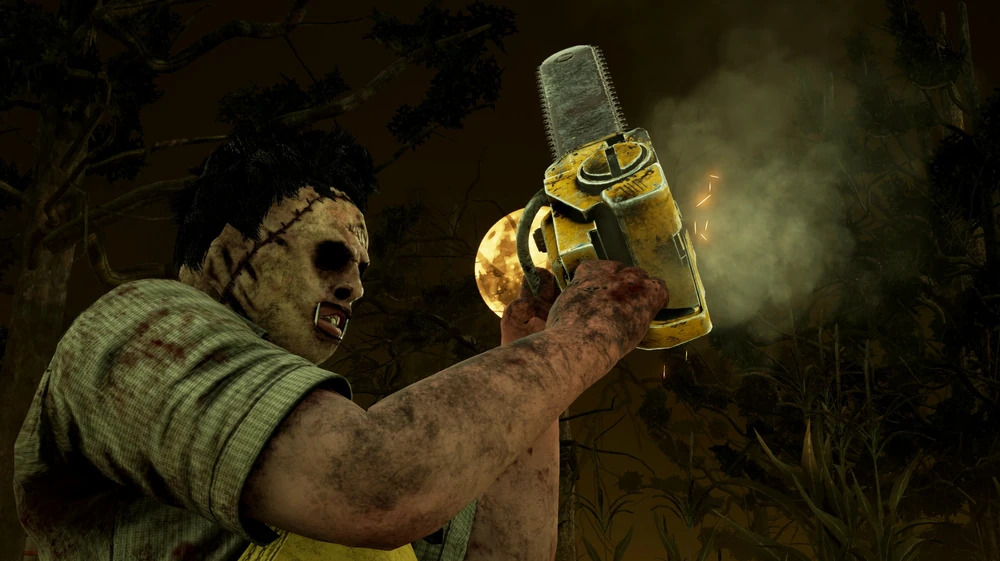

O Canibal
- Nome: Bubba "Junior" Sawyer
- Genero: Masculino
- Origem: Americano
- Poder: Serra Elétrica do Bubba
- Arma: A Marreta
- Velocidade de Movimento: 115% | 4.6m/s
- Raio de Terror: 32 metros
- DLC: LEATHERFACE™
- Dublador: Filip Ivanovic
História do Personagem
Leatherface é apresentado não como um assassino movido por malícia ou sadismo, mas sim por um medo profundo e distorcido. Suas ações hediondas são motivadas pelo pavor de estranhos, pelo medo de desapontar sua família canibal e pelo terror de que seus segredos sejam descobertos. Ele é obediente, assumindo vários papéis dentro da casa — protetor, servo e cuidador — vendo a família como sua única fonte de conforto e segurança.
O ponto de virada ocorre quando um grupo de adolescentes invade sua casa. Leatherface age para proteger sua família como foi ensinado, mas uma das adolescentes consegue escapar. Ele a persegue, mas ela é ajudada por um caminhoneiro que mata o irmão de Leatherface. Tomado pela fúria, ele tenta atacar o caminhoneiro, mas é dominado e ferido com sua própria motosserra.
Enquanto observa os estranhos fugirem, Leatherface é consumido pela raiva, pesar e, principalmente, pelo pânico. Ele teme que a polícia seja chamada, que sua família seja presa e que ele seja deixado sozinho, incapaz de sobreviver sem as ordens deles. Em um frenesi de desespero, ele gira sua motosserra, tentando afastar as ameaças imaginárias que o cercam.
Nesse momento de colapso total, um sentimento diferente toma conta dele: um terror novo e avassalador, vindo de uma fonte externa. Esse medo, no entanto, é estranhamente reconfortante, lembrando-o do medo que sente de desapontar sua família. Ele é transportado para um lugar familiar, mas desconhecido (o Território da Entidade), onde entende instintivamente seu novo propósito: ele não pode falhar novamente e deve usar suas habilidades para eliminar todas as novas ameaças, silenciando o mundo até que reste apenas o som de sua serra.